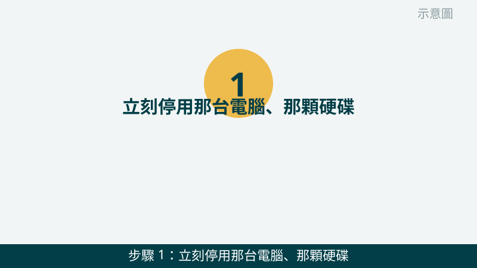
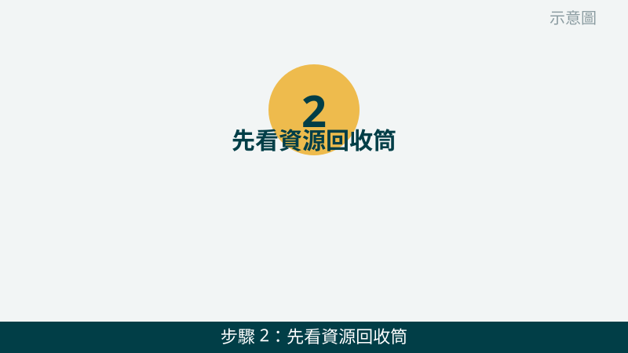
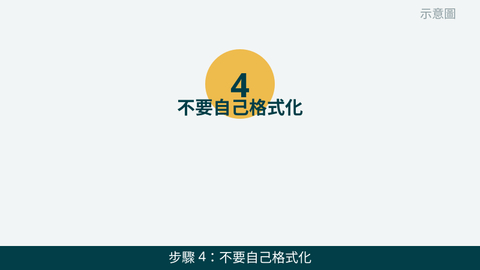
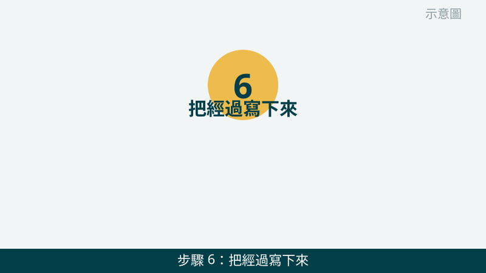

檔案按錯刪掉、資料夾整個不見，那一瞬間確實會慌。但請先深呼吸：誤刪後的第一個動作，決定了後面還有多少機會。越快停用、越少寫入，狀況就越單純；反過來一直試、一直裝軟體，反而可能把機會用掉。
開始之前先跟您說清楚兩種情況，處理方向完全不同：「只是誤刪、硬碟本身還正常」和「硬碟有異音、摔到、進水」是兩回事。前者重點是停用保現場；後者請直接停手送修，不要再接電測試。下面 6 步會幫您先分清楚自己屬於哪一種。
資料不見的狀況先傳給我們看
把發生經過、之後有沒有繼續使用、有沒有異音或摔落進水寫下來傳 LINE，我們會先幫您判斷屬於哪一種情況。先免費評估、報價透明，確認後再預約維修。
檔案誤刪、資料救援前自救檢查清單（由簡到難）
- 1. 立刻停用那台電腦、那顆硬碟，不要再寫入。誤刪後請先停下手邊的操作，不要再存新檔案、不要下載東西、也不要安裝任何軟體到同一顆硬碟上。怎麼判斷：您停得越快，舊資料被覆蓋的機會就越小；如果已經繼續用了好一陣子，也請從現在開始停用，再把狀況告訴我們。

示意圖（非官方截圖） - 2. 先看資源回收筒，確認是不是只是誤刪到那裡。請打開桌面上的資源回收筒，找找看檔案是不是還在裡面。如果在裡面，請對檔案按右鍵選「還原」，不要用拖曳或剪下貼上的方式搬來搬去。怎麼判斷：還原後檔案回到原本位置，就是最單純的誤刪；回收筒裡沒有，才需要往下想。

示意圖（非官方截圖） - 3. 分清楚：是誤刪、格式化，還是硬碟本身出問題。請回想一下：是按錯刪掉檔案、是不小心格式化，還是硬碟突然讀不到、出現異音、摔到或進水？怎麼判斷：單純誤刪且硬碟運作正常，重點是停用保現場；格式化後如果又存了很多新檔案，難度會提高很多；硬碟有異音、摔到或進水，請直接跳到紅框區、不要再測試。
示意圖（非官方截圖） - 4. 不要自己格式化，也不要跑來路不明的一鍵救援。系統如果跳出格式化提示，裡面資料很重要時請不要按。市面上宣稱一鍵保證救回的軟體也請不要隨便下載安裝，安裝本身就是一次寫入，還可能夾帶廣告程式。怎麼判斷：拿不準該不該按、該不該裝，就是先拍照問我們的訊號，不要先按了再問。

示意圖（非官方截圖） - 5. 不要自己拆硬碟盤體，也不要拆開硬碟外殼。硬碟裡面的碟片非常怕灰塵和碰觸，拆開後狀況往往更難處理。外接硬碟的外殼如果不確定怎麼拆，也請不要硬拆。怎麼判斷：只要動到「拆」這個念頭，就先停下來拍照問我們，拆壞了通常比不拆更難收拾。
示意圖（非官方截圖） - 6. 把經過寫下來，連同畫面拍照傳給我們。請寫下：什麼時候不見的、是誤刪還是格式化、之後有沒有繼續使用、有沒有異音、摔落或進水，再連同錯誤訊息的照片一起傳 LINE。怎麼判斷：經過寫得越清楚，我們越能先幫您分清難度，也能先說明檢測的方向，評估不收費。

示意圖（非官方截圖）
別再自己試了
- 硬碟傳出喀喀聲、刮擦聲，或摔到、進水、泡水後資料不見——請立刻停手、不要再接電測試
- 檔案被加密、跳出勒索訊息要求付錢時，不要付錢、也不要照對方指示操作
- 誤刪後已經反覆寫入很久、又裝了很多軟體，裡面資料又很重要時，不要再亂試
- 想自己拆硬碟盤體或拆開硬碟本體——請先拍照問我們，不要硬拆
- 來路不明的救援軟體宣稱一鍵保證救回，不要隨便下載安裝
最後要先跟您說清楚：有些情況比較有機會處理，有些情況真的很難，甚至可能救不回來。我們不會事先給您成功率承諾，檢測後會先說明狀況和報價，再由您決定要不要處理，這樣對您的資料和荷包都比較負責。
常見問題
誤刪檔案後繼續用電腦會怎樣？
誤刪的檔案通常不是立刻消失，而是原本佔的位置被標記成可以再利用。您繼續用電腦、下載東西、存新檔案或安裝軟體，就可能剛好寫到那個位置，把舊資料覆蓋掉，覆蓋掉的部分就很難再處理了。所以誤刪後第一件事是停用，不要再寫入。
哪些情況比較有機會處理，哪些很難？
剛誤刪、還沒再寫入、硬碟本身運作正常的情況，通常比較有機會處理；已經反覆寫入很久、格式化後又存了很多新檔案、硬碟有異音或摔到進水、檔案被加密勒索的情況，處理難度就高很多，甚至可能救不回來。我們不會事先給您成功率承諾，檢測後會先說明狀況和報價，再由您決定。
自己跑救援軟體有什麼風險？
把救援軟體裝到同一顆硬碟上，安裝本身就是一次寫入，可能剛好覆蓋掉您想救的資料；來路不明的軟體還可能夾帶廣告或惡意程式，掃描過程也可能對已經不穩定的硬碟造成更多負擔。拿不準的時候，請先停用、拍照問我們，評估不收費。
相關文章：隨身碟讀不到、硬碟抓不到怎麼辦、自救百科總覽